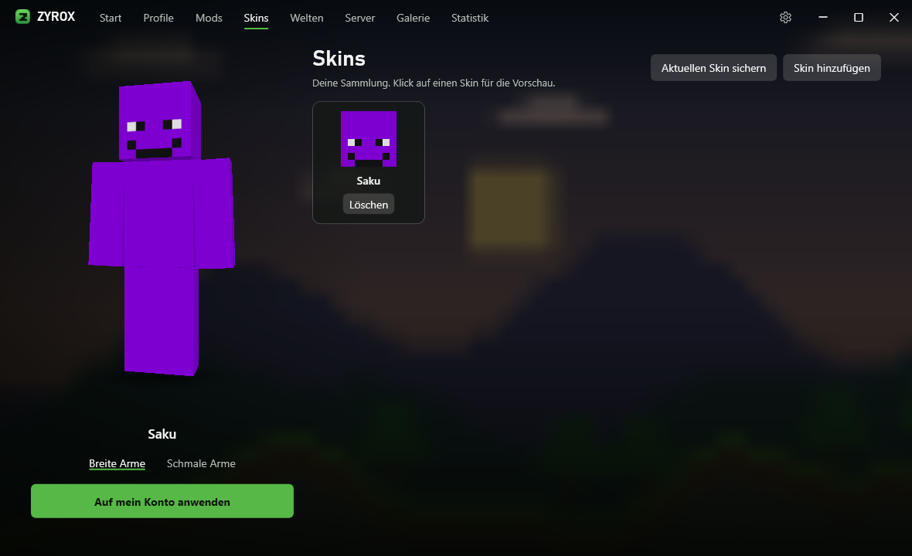
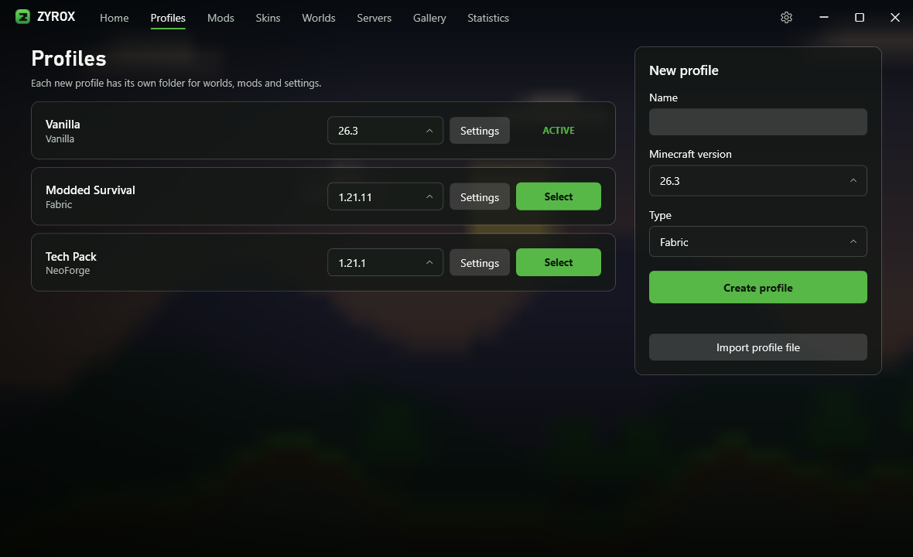
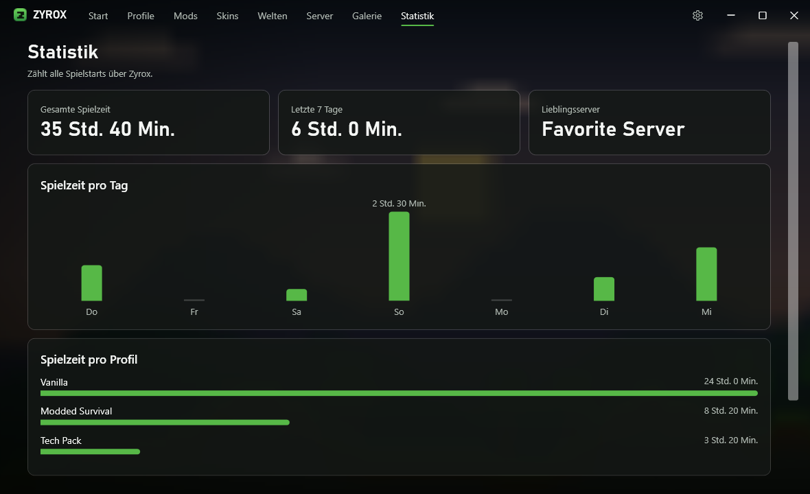

A skin that feels alive
Your avatar follows your cursor, waves hello, cheers when the game is ready and sits down when you step away.
Closed beta · Windows
Zyrox is a clean launcher built around you: your skin in live 3D, your profiles and your mods, ready in one click.
No cheats. Sign in with your own Microsoft account.
Mods, skins, worlds and servers each get their own page, so nothing gets in the way of playing.



Your avatar follows your cursor, waves hello, cheers when the game is ready and sits down when you step away.
Search Modrinth from inside Zyrox for mods, modpacks, resource packs and shaders. Update your mods all at once.
Pick a loader when you create a profile. Your normal game stays untouched.
See who is online and your ping, pin your favorites to the start page and join in one click.
All your worlds across every profile. Back them up or jump straight in.
Switch between your Microsoft accounts without signing in again.
Export a profile with its mods as one file and send it to a friend. Your worlds stay private.
Seven color themes, or let Zyrox change with the time of day. Use your own screenshots as the background.
When a new version is out, Zyrox offers it on the start page and installs it with one click.
Zyrox is in closed beta. Join the Discord to get access.